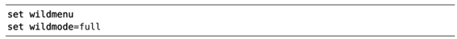

）。另外，如果我们多次按<Tab>键的话，命令行上会依次显示colder、colorscheme，然后再回到最初的col，如此循环往复。要想反向遍历补全列表，可以按<S-Tab>。
）。另外，如果我们多次按<Tab>键的话，命令行上会依次显示colder、colorscheme，然后再回到最初的col，如此循环往复。要想反向遍历补全列表，可以按<S-Tab>。技巧32自动补全 Ex 命令
如同在shell中一样，在命令行上也可以用<Tab>键自动补全命令。
Vim 在选取 Tab 补全的补全项时非常智能，它会检查命令行上已经输入的上下文，然后再构建合适的补全列表。例如，可以这样输入：
➾:col<C-d>
《 colder colorscheme
<C-d>命令会让Vim 显示可用的补全列表（参见:h c_CTRL-D）。另外，如果我们多次按<Tab>键的话，命令行上会依次显示colder、colorscheme，然后再回到最初的col，如此循环往复。要想反向遍历补全列表，可以按<S-Tab>。
假设我们想改配色方案，但是不太记得要用的配色方案的名称，这时可以用<C-d>命令列出所有的可用选项：
➾:colorscheme <C-d>
《 blackboard desert morning shine
blue elflord murphy slate
darkblue evening pablo solarized
default koehler peachpuff torte
delek mac_classic ron zellner
这一次，<C-d>基于可用的配色方案显示一个补全列表。如果我们想激活solarized方案，只需输入字母“so”，然后按 Tab 键即可补全此命令。
在很多场景中，Vim的 Tab 补全都能做出正确的选择。如果我们输入了一个以文件路径作为参数的命令（如:edit或:write），那么<Tab>会用当前工作目录中的目录或文件名进行补全。在:tag命令中，它会自动补全标签名；而在:set及:help命令中，它可以对 Vim 的每一个设置选项进行补全。
甚至在我们创建自定义 Ex 命令时，也能够定义该命令的 Tab 键补全行为。要想了解更多，请查阅:h :command-complete。
在多个补全项间选择
当 Vim 只找到一个Tab 补全项时，它会直接使用整个补全项。但是如果 Vim 找到了多个补全项，那么会有几种做法。缺省情况下，首次按下 Tab 键时，Vim 会用第一个补全项进行补全，以后每按一下 Tab 键，就会依次遍历剩余的补全项。
调整‘wildmode’选项可以自定义补全行为（参见:h 'wildmode'）。如果你习惯用bash shell的方式工作，那么下面的设置会满足你的需要：
如果你习惯于 zsh 提供的自动补全菜单，或许会想试试这个：

当‘wildmenu’选项被启用时，Vim会提供一个补全导航列表。我们可以按<Tab>、<C-n>或<Right>正向遍历其列表项，也可以用<S-Tab>、<C-p>或<Left>对其进行反向遍历。